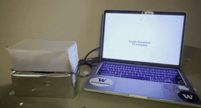
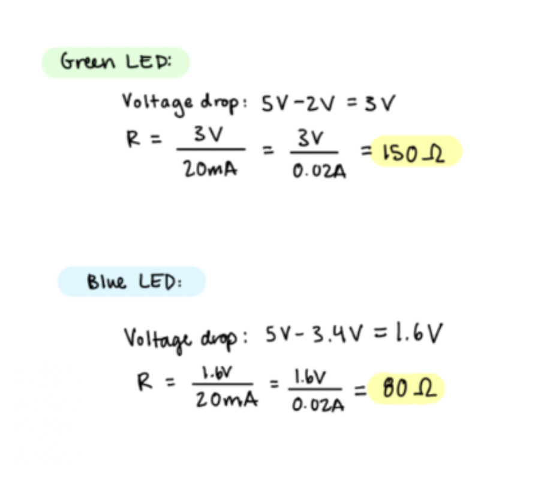
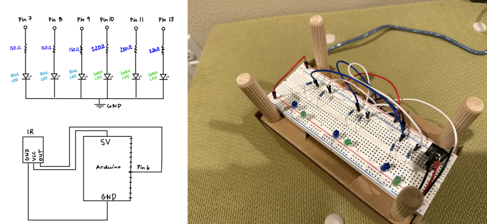
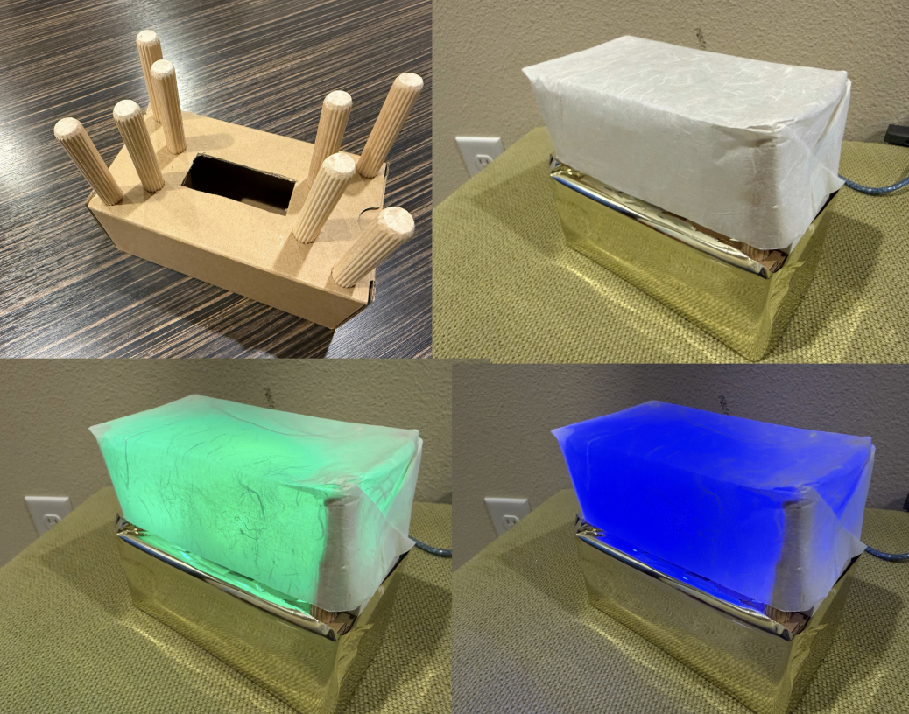

For my Final Project, I created a prototype for PomoLight, a Pomodoro study timer and lamp!
Washi paper for the exterior, for aesthetic purposes. Hot glue to assemble the enclosure materials.
Breadboard, IR Sensor, Remote Control, LED Diodes, Wires, Resistors, 100Ω & 220Ω, Arduino

Above are my calculations for the current, which determined the value of resistors I used. For the light strip, the calculated resistance, based on a recommended 20mA current draw from each pin, is 100Ω for the blue LED and 220Ω for the green LED.

Here is a photo of the final circuit I put together, based on my calculations.
// Include IR remote library
#include <IRremote.h>
// IR REMOTE SETUP
// IR receiver pin
const int irPin = 6;
// Create IR receiver object
IRrecv irrecv(irPin);
// Storage for decoded IR results
decode_results results;
// Define IR codes for your remote buttons
#define IR_START 0xFF30CF // button 1
#define IR_PAUSE 0xFF18E7 // button 2
#define IR_END 0xFF7A85 // button 3
// DEFINING LED PINS
// Blue LED pins
const int blue1 = 7;
const int blue2 = 8;
const int blue3 = 9;
// Green LED pins
const int green1 = 10;
const int green2 = 11;
const int green3 = 13;
// SETUP
void setup() {
// Start serial communication
Serial.begin(9600);
// Enable IR receiver
irrecv.enableIRIn();
// Set blue LED pins as outputs
pinMode(blue1, OUTPUT);
pinMode(blue2, OUTPUT);
pinMode(blue3, OUTPUT);
// Set green LED pins as outputs
pinMode(green1, OUTPUT);
pinMode(green2, OUTPUT);
pinMode(green3, OUTPUT);
// Turn all LEDs off at startup
allOff();
}
// MAIN LOOP
void loop() {
// IR → p5.js communication
// If an IR signal is received
if (irrecv.decode(&results)) {
// Store the IR code
unsigned long code = results.value;
// Prepare IR receiver for next signal
irrecv.resume();
// If START button pressed
if (code == IR_START) {
Serial.println("START");
startLights();
}
// If PAUSE button pressed
if (code == IR_PAUSE) {
Serial.println("PAUSE");
pauseLights();
}
// If END button pressed
if (code == IR_END) {
Serial.println("END");
allOff();
}
}
// p5.js → Arduino communication
// If serial data is available
if (Serial.available()) {
// Read incoming command
String cmd = Serial.readStringUntil('\n');
// Execute matching command
if (cmd == "START") startLights();
if (cmd == "PAUSE") pauseLights();
if (cmd == "END") allOff();
}
}
// LED CONTROL FUNCTIONS
// Turn all LEDs off
void allOff() {
digitalWrite(blue1, LOW);
digitalWrite(blue2, LOW);
digitalWrite(blue3, LOW);
digitalWrite(green1, LOW);
digitalWrite(green2, LOW);
digitalWrite(green3, LOW);
}
// Turn on green LEDs (START state)
void startLights() {
digitalWrite(blue1, LOW);
digitalWrite(blue2, LOW);
digitalWrite(blue3, LOW);
digitalWrite(green1, HIGH);
digitalWrite(green2, HIGH);
digitalWrite(green3, HIGH);
}
// Turn on blue LEDs (PAUSE state)
void pauseLights() {
digitalWrite(green1, LOW);
digitalWrite(green2, LOW);
digitalWrite(green3, LOW);
digitalWrite(blue1, HIGH);
digitalWrite(blue2, HIGH);
digitalWrite(blue3, HIGH);
}
// Base background color
const pastelBG = "#F7F3FF";
// Text color for UI
const pastelText = "#4A4458";
// Overlay colors for lamp states
const overlayStart = "rgba(180, 255, 200, 0.35)";
const overlayPause = "rgba(180, 210, 255, 0.35)";
const overlayEnd = "rgba(200, 200, 200, 0.25)";
// SERIAL CONFIG
// Baud rate for Arduino communication
const BAUD_RATE = 9600;
// Serial port + connect button reference
let port, connectBtn;
// Current lamp mode
let mode = "OFF";
// Current UI state
let state = "ASK_STUDY";
// Option lists for study, break, sessions
let studyOptions = [15, 20, 25, 30, 45, 60];
let breakOptions = [3, 5, 10, 15];
let sessionOptions = [1, 2, 3, 4, 5, 6];
// Indexes for selected options
let studyIndex = 0;
let breakIndex = 0;
let sessionIndex = 0;
// Session tracking
let totalSessions = 0;
let currentSession = 0;
// TIMER
// Countdown timer value
let timer = 0;
// Whether timer is active
let timerRunning = false;
// BUTTONS
// UI button references
let selectBtn, startBtn, pauseBtn, endBtn;
let plusBtn, minusBtn;
// SETUP
function setup() {
// Create Connect button (always on top)
connectBtn = createButton("Connect to Arduino");
connectBtn.position(10, 10);
connectBtn.class("connect");
connectBtn.mouseClicked(onConnectButtonClicked);
// Initialize serial system
setupSerial();
// Create canvas behind UI
let cnv = createCanvas(windowWidth, windowHeight);
cnv.style("z-index", "-1");
// Text styling for p5 UI
textFont("system-ui", 45);
textStyle(BOLD);
textAlign(CENTER, CENTER);
// BUTTONS FOR TIMER + SESSION SETUP
minusBtn = createButton("–");
minusBtn.parent("ui-container");
minusBtn.mouseClicked(() => adjustValue(-1));
plusBtn = createButton("+");
plusBtn.parent("ui-container");
plusBtn.mouseClicked(() => adjustValue(1));
selectBtn = createButton("Select");
selectBtn.parent("ui-container");
selectBtn.mouseClicked(() => handleSelect());
startBtn = createButton("Start");
startBtn.parent("ui-container");
startBtn.mouseClicked(() => sendCommand("START"));
pauseBtn = createButton("Pause");
pauseBtn.parent("ui-container");
pauseBtn.mouseClicked(() => sendCommand("PAUSE"));
endBtn = createButton("End");
endBtn.parent("ui-container");
endBtn.mouseClicked(() => sendCommand("END"));
}
// DRAW LOOP
function draw() {
// Update connect button label
const portIsOpen = checkPort();
// Draw background
background(pastelBG);
// Lamp overlay
noStroke();
if (mode === "START") fill(overlayStart);
else if (mode === "PAUSE") fill(overlayPause);
else fill(overlayEnd);
rect(0, 0, width, height);
// Read serial messages
readSerialMessages();
// Draw UI text
drawUI();
// POMODLIGHT TIMER
if (timerRunning && frameCount % 60 === 0) {
timer--;
if (timer <= 0) {
timerRunning = false;
// Study → Break
if (state === "RUNNING") {
state = "BREAK";
timer = breakOptions[breakIndex] * 60;
timerRunning = true;
sendCommand("PAUSE");
}
// Break → Next session or Done
else if (state === "BREAK") {
currentSession++;
if (currentSession < totalSessions) {
state = "RUNNING";
timer = studyOptions[studyIndex] * 60;
timerRunning = true;
sendCommand("START");
} else {
state = "DONE";
sendCommand("END");
}
}
}
}
}
// UI RENDERING
function drawUI() {
fill(pastelText);
if (state === "ASK_STUDY") {
text("Study Duration:", width/2, height/2 - 40);
text(studyOptions[studyIndex] + " minutes", width/2, height/2);
return;
}
if (state === "ASK_BREAK") {
text("Break Duration:", width/2, height/2 - 40);
text(breakOptions[breakIndex] + " minutes", width/2, height/2);
return;
}
if (state === "ASK_SESSIONS") {
text("Number of Sessions:", width/2, height/2 - 40);
text(sessionOptions[sessionIndex], width/2, height/2);
return;
}
if (state === "READY") {
text("Ready to Start", width/2, height/2 - 40);
text("Press Start or Remote Button 1", width/2, height/2);
return;
}
if (state === "RUNNING" || state === "BREAK") {
let mins = floor(timer / 60);
let secs = timer % 60;
text(nf(mins, 2) + ":" + nf(secs, 2), width/2, height/2);
text(`Session ${currentSession + 1} of ${totalSessions}`, width/2, height/2 + 60);
return;
}
if (state === "DONE") {
text("All Sessions Complete!", width/2, height/2);
return;
}
}
// VALUE ADJUSTMENT
function adjustValue(dir) {
if (state === "ASK_STUDY") {
studyIndex = (studyIndex + dir + studyOptions.length) % studyOptions.length;
}
if (state === "ASK_BREAK") {
breakIndex = (breakIndex + dir + breakOptions.length) % breakOptions.length;
}
if (state === "ASK_SESSIONS") {
sessionIndex = (sessionIndex + dir + sessionOptions.length) % sessionOptions.length;
}
}
// SELECT BUTTON LOGIC
function handleSelect() {
if (state === "ASK_STUDY") state = "ASK_BREAK";
else if (state === "ASK_BREAK") state = "ASK_SESSIONS";
else if (state === "ASK_SESSIONS") {
totalSessions = sessionOptions[sessionIndex];
currentSession = 0;
state = "READY";
}
}
// SERIAL COMMUNICATION
function readSerialMessages() {
let str = port.readUntil("\n");
if (str.length === 0) return;
str = str.trim();
console.log("Incoming:", str);
if (str === "START") {
mode = "START";
if (state === "READY" || state === "BREAK") {
state = "RUNNING";
timer = studyOptions[studyIndex] * 60;
timerRunning = true;
}
}
if (str === "PAUSE") {
mode = "PAUSE";
if (state === "RUNNING") {
state = "BREAK";
timer = breakOptions[breakIndex] * 60;
timerRunning = true;
}
}
if (str === "END") {
mode = "END";
timerRunning = false;
if (state !== "DONE") state = "READY";
}
}
// SEND COMMANDS TO ARDUINO
function sendCommand(cmd) {
if (port.opened()) {
port.write(cmd + "\n");
console.log("Sent:", cmd);
if (cmd === "START") {
state = "RUNNING";
timer = studyOptions[studyIndex] * 60;
timerRunning = true;
}
if (cmd === "PAUSE") {
state = "BREAK";
timer = breakOptions[breakIndex] * 60;
timerRunning = true;
}
if (cmd === "END") {
timerRunning = false;
state = "READY";
}
}
}
// SERIAL SETUP
function setupSerial() {
port = createSerial();
let used = usedSerialPorts();
if (used.length > 0) {
port.open(used[0], BAUD_RATE);
}
}
// CHECK PORT STATUS
Technical Writeup
Concept: The initial idea was to create a standalone study lamp that would have an LCD monitor
that displays the menu, with options to adjust the study duration and session frequency.
However, I began to realize that I wanted to incorporate a web component because the Pomodoro
sites that I like to use have webpages where I can better see the time left after a session.
After all, the main point of this project was for me to create a light where users can see which
phase they are in during their study session.
Ideation & Prototyping: I used wooden dowels and cardboard for the structure of the lamp itself,
but to hold the materials, I used hot glue and tape. If I had more time, I would have tried to come up
with ways to make the lamp look aesthetically pleasing, but I couldn't really figure that out in the short
time that I had.

Another consideration is that if I were to iterate on this project more, I'd want to
3-D print the frame of the base, but still preserve the paper lantern shell for the light. Lastly,
I would want to see how I'd incorporate buttons into the actual prototype itself, but for now, I have
implemented the use of a remote control, which communicates with the IR sensor.
How it works: To start a study session, using the webpage for PomoLight, the user will toggle through
and select their preferred study duration. Then, they will choose the break duration, and the frequency
of the sessions. Then, clicking either "Start" on the screen or using the IR remote by pressing button 1
will begin the session. From there, the user can control whether the session pauses or ends. 2 is pressed
for a break / pause, and 3 is pressed to end the session.
Challenges: I wanted to use an LED Strip at first, but I had trouble getting it to work. I also found that
the diodes were easier to incorporate into the project, since the light emitted from the lamp does not need
to be that bright. Other difficulties encountered were the logic to connect the remote to the sensor,
but I was able to resolve this by using serial monitor to check what codes represent each of the buttons
I needed for the project (1, 2, and 3).
Considerations: For future iteration, I would want to incorporate a speaker that buzzes when the user is
either at the break time or at the end of their session. This is a stretch goal I wasn't able to implement
but would be interested in doing if I had more time. I would also be interested in expanding the capabilities of
the remote, for different features of the PomoLight. I'd want to map more of the buttons to future functions
and features that are implemented. An example would be using the volume buttons on the remote to control the
volume of the alarm beeping, once that is implemented.
Demo!
AI Usage
AI was used only to format the Arduino code to be readable on this webpage.